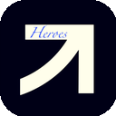

markClippermarkClipper lives in your side panel — never a popup. Clip the clean article, the full page, a selection, a bookmark, a single image or a 250-photo gallery. Frontmatter, absolute links, tables, tasks, highlights. Your library stays on your machine. Zero dependencies. MIT.
Every mode writes clean Markdown with YAML frontmatter.
Readability-lite strips nav, ads and footers. You get the prose — links absolutized, code fenced, tables kept.
Everything rendered, converted faithfully. For reference dumps and short pages.
Highlight text, clip. Perfect quotes without the surrounding chrome.
Right-click any link. Blocked page? Bookmark fallback keeps the URL safe.
srcset hi-res, lazy attrs, og:image, CSS heroes. Dedupe, filters, lightbox, bulk download, gallery Markdown.
PNG/JPEG capture embedded downscaled (quota-safe); original downloadable.
Type filters, 4 sorts, edit, re-clip, per-clip notes and todos, streak stats.
Single or bulk. Backup/restore the whole library as one JSON file you own.
chrome.storage.local only. CSP script-src 'self'. No accounts, no cloud, no analytics.
The differentiator for researchers, designers and archivists.
harvest → hi-res resolve → dedupe → filter → grid → lightbox · copy gallery MD · bulk download · save clip
Chrome, Edge, Brave, Opera, Arc, Vivaldi, Yandex.
git clone https://github.com/Ahmedbakr78/Heros_Note.git).chrome://extensions and enable Developer mode.Heros_Note folder (contains manifest.json).chrome://extensions/shortcuts — defaults Ctrl+Shift+K panel, A article, S selection, B bookmark, I photos, P shot.Full 30-question list in the README.
Yes — MIT, unlimited clips, photos and exports. No accounts, no quotas.
chrome.storage.local in your browser profile. Backup exports one JSON file you own.
The page stays visible; your selection and focus are never stolen by a popup window.
Up to 250 per page, with hi-res srcset resolution, dedupe, filters and bulk download.
Yes — YAML frontmatter + GFM Markdown drop straight into a vault.